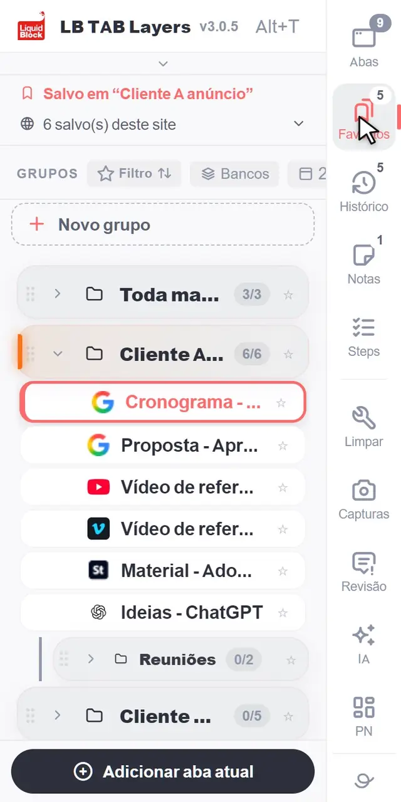
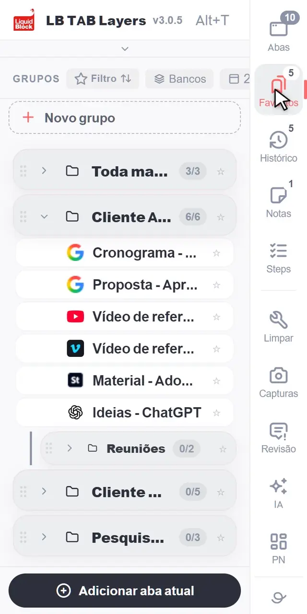
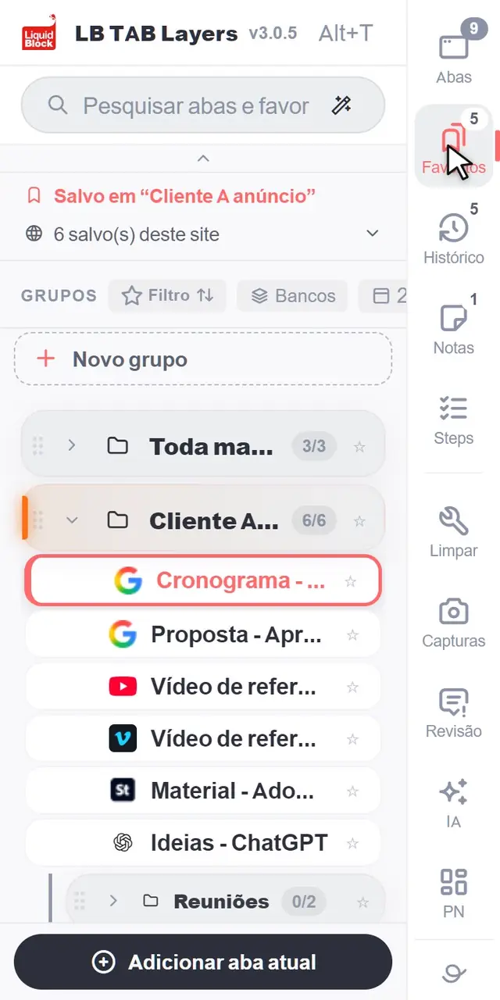

Salve por projeto as abas em que você está trabalhando, como favoritos do Chrome. Abra todas com ▶ como um grupo de abas do Chrome e feche todas com ■. Abra o painel quando quiser com Alt+T.


Clique em “+ Novo grupo” e crie um grupo para cada projeto. Salve a aba em que você está com “Adicionar aba atual”.
Passe o mouse sobre um grupo e clique em ▶. Todas as abas salvas abrem como um grupo de abas do Chrome, com o mesmo nome e a mesma cor.

Uma única caixa de pesquisa procura nas suas abas abertas, nas abas salvas e no histórico de hoje. Pequenos erros de digitação não atrapalham.
O LB TAB Layers é feito pela Liquid Block Inc., um estúdio de vídeo e motion graphics em Kobe, no Japão.
Liquid Block Inc., Kobe, Japão. Fale com a gente em info@liquid-block.com.
Seus grupos são pastas de favoritos do Chrome. Eles continuam lá mesmo se você remover a extensão.
Abas, grupos e notas ficam no seu navegador e nos seus favoritos do Chrome. Só um ID de licença anônimo chega ao nosso servidor.
É só instalar e começar. Sem cadastro, sem e-mail.
Grupos e abas excluídos vão primeiro para uma lixeira de favoritos, e você tem 8 segundos para clicar em “Desfazer”.
Nossa política de privacidade explica para que serve cada permissão.
Sim. O plano gratuito permite criar até 5 grupos. Todos os recursos PRO ficam liberados de graça por 90 dias após a instalação. O PRO é uma compra única, não uma assinatura.
As abas que você salvou continuam nos seus favoritos do Chrome, em pastas com o nome dos seus grupos. Os dados guardados dentro da extensão, como as notas, são apagados, então exporte-os antes em Configurações.
Sim. As telas da extensão estão disponíveis em 15 idiomas, entre eles inglês, japonês, coreano, chinês (tradicional e simplificado), alemão, francês, espanhol, português, italiano, holandês, polonês, turco, russo e hindi.
Google Chrome 114 ou mais recente no Windows, Mac, Linux e ChromeOS.
Abra o painel com Alt+T, salve a aba em que você está e experimente ▶ e ■.